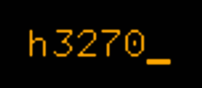

|  |
|
|
Home Screenshots Download License Credits Known users Release Notes Installation User Guide Configuration Project Page Mailing Lists Bug Reports CVS Access |
User Guideh3270 is available as both a stand-alone web application (a servlet) and a portlet for use in a portlet container. We will first describe how to use the stand-alone web application, then how the portlet interface differs from this.
By default, h3270 provides a generic terminal emulation
interface. You can use it to connect to any host that is
reachable from the machine on which h3270 runs via TCP/IP. In
our example, we assume that h3270 runs in a default Tomcat
installation on the local machine. The address to use in the
browser window is
Fig. 1: Generic Screen at Startup In the input field at the lower left corner, enter the DNS address of the host you want to connect to. You can either press ENTER or push the "Connect" button on the lower right to let h3270 connect to the indicated host. If the connection can be established, the login screen of the specified host should appear, as shown in fig. 2. (For this particular host screen, we have defined a rendering template to make it look pretty. Normally, if h3270 doesn't know anything about the host you connect to, you will see a simple, character-based layout.)
Fig. 2: Terminal Emulator Connected to Host You can operate the host application from within the browser window very much the same as you would do in an ordinary terminal or emulator. You can use the mouse or keyboard to place the cursor into the input field you want to make changes to, and press ENTER to send your modified fields back to the host. Please note: The HTML-based input fields that h3270 uses work somewhat differently than what you may know from traditional terminals and emulators. For example, 3270 terminals usually operate in overwrite mode, so what you type replaces the original contents of the field key by key. Many host applications make use of this by prefilling input fields with underscores, and the like. Unfortunately, there is no such overwrite mode available for HTML input fields. We have not completely settled on a way to handle this nicely in h3270. For the time being, our approach is to remove leading and trailing blanks, underscores, and NUL characters from the contents of input fields when we display them. As a special case, this means when a field contains only blanks, underscores, or NUL characters, it will start out completely empty in HTML. This allows for convenient input from within the browser, but may cause problems with the underlying host application in some circumstances. This particular area should be considered work in progress. Many host applications also make extensive use of function keys (such as PF7 and PA1). h3270 uses the function keys of your keyboard (F1-12 on traditional PC keyboards) for PF1-12. Any events from these function keys are handled so that the h3270 web application receives them, rather than the browser or the operating system (this is a new feature since h3270 version 1.1). You can also press the button in the lower right corner of the page to display an auxiliary keypad beneath your application (see fig. 3).
Fig. 3: Keypad Enabled Some of the keys on this keypad are not implemented yet, partly because they do not really make sense in an HTML interface. All the function keys (PFx and PAx) do work, however (although PF13-24 are still missing). The keypad in its current form is therefore only a starting point which probably must be tailored to the particular needs of your application (this does require programming within h3270). The meaning of the other buttons at the bottom of the page (next to the "Keypad" button) is as follows:
Using the PortletThe h3270 portlet is very similar to the stand-alone web application. To use it, you (or an administrator) needs to place the portlet onto a portal page first (the name of the portlet is "H3270Portlet"). The portlet can be configured to connect to a fixed host automatically. In this case, you needn't enter a host address yourself, it should come up with that host's start screen all by itself. To change the configuration, place the portlet into EDIT mode (usually by pressing a pencil-shaped icon in the portlet's titlebar). The portlet then displays a screen similar to the preferences window of the web application. You can enter the address of the target host on this screen, and change all the other settings as well. Press "Connect" or "Disconnect" to connect or disconnect. If you enable "Auto-Connect" mode, then the portlet will always try to remain connected with the target host whenever it is in VIEW mode. |
{kind=link}
{kind=link}
{kind=link}